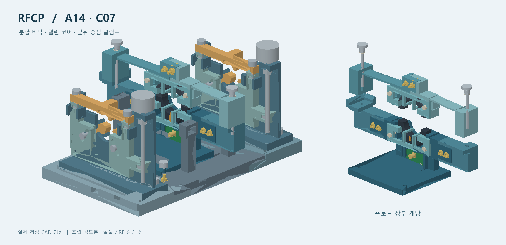

케이블을 감싸서 RF 전류를 보다
분할 코어와 수동 권선으로 케이블의 RF 합전류를 관측하는 프로브입니다. 앞뒤 클램프가 케이블을 지지하고, 분리형 PCB 지그로 전달 응답을 특성화합니다.

01
원리와 사용
어떤 전류를 측정하고, 어떻게 연결·교정하는지 읽습니다.
열기 →02
45단계 조립절차
부품을 꺼내 보며 잡을 위치와 공구 방향을 확인합니다.
열기 →03
부품 규격과 설계 파일
한 세트의 사용 수량·규격과 현행 STL·STEP·Gerber를 확인합니다.
열기 →04
전체 구조와 움직임
개폐·교정·분리·케이블 측정의 네 장면을 조작합니다.
열기 →CAD 기반 시제품 설계입니다. 실물의 조립·유효 대역·정확도와 현장 보호 정격은 검증 전입니다.